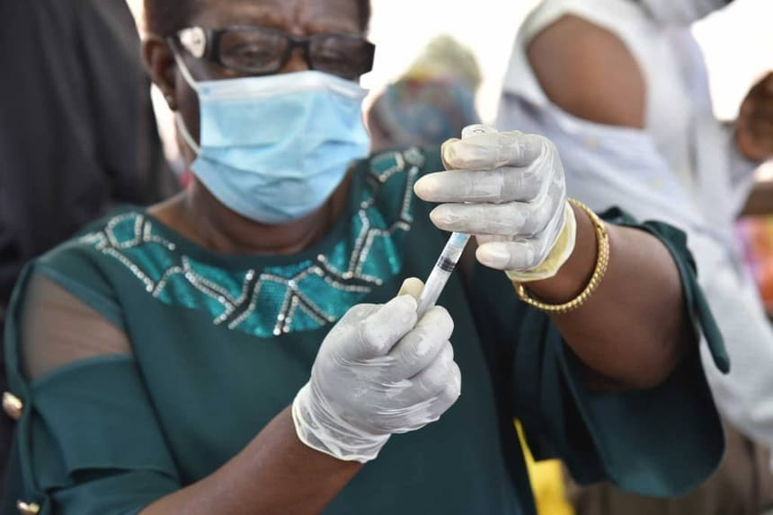

Une campagne de santé publique a parcouru tous les quartiers de la commune : vaccination des enfants, dépistage du paludisme et sensibilisation à l'hygiène pour les 0–5 ans.
Menée avec le Centre hospitalier régional et les centres de santé de proximité, l'opération a permis de mettre à jour les carnets de vaccination de nombreux enfants et de distribuer des moustiquaires imprégnées aux familles. Des équipes mobiles se sont rendues au plus près des habitants, y compris dans les quartiers périphériques.
Prévenir plutôt que guérir
Les agents de santé ont rappelé l'importance des gestes simples : se laver les mains, dormir sous moustiquaire, consulter dès les premiers symptômes de fièvre. La fièvre jaune, le paludisme et les maladies diarrhéiques figurent parmi les priorités de prévention dans la région.
La mairie remercie le personnel soignant mobilisé et invite les familles à se rapprocher des centres de santé pour tout complément de vaccination.